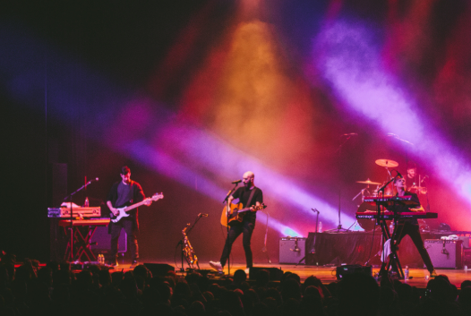
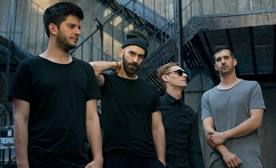
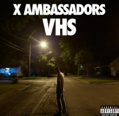

Our band was formed in 2009 in Ithaca, New York. From the very beginning,
we strived to create a unique sound that combined elements of indie rock, pop, and alternative music.
We started our career by performing in local clubs and recording demos.
After recording a few songs, we were given the opportunity to tour with fellow bands like
Imagine Dragons
and Panic! at the Disco

In 2015, our debut album “VHS” was released,
which yielded two hit singles – “Renegades” and “Unsteady”,
which brought us huge popularity.
In a sense, we're followers of Imagine Dragons.
We write simple but catchy songs that are generously
filled with hooks—a guitar strum, a recurring sound,
an interesting motif in the chorus. The themes are essentially the same:
emotional struggles, love, self-discovery, the search for freedom, family, and so on.
That last part is true, by the way. Sam (vocalist) and Casey (keyboardist) Harris
are truly brothers.
We share many things in common – family ties, a passion for music,
a commitment to the rights of people with disabilities.
The fact is, Casey has been blind since birth.
"Casey and I have matching tattoos—a triangle with an eye inside. And they have eyes in them.
In my case, the eye is closed—it symbolizes my brother, the connection with him."
- Sam says, noting that his brother's illness played a huge role in his development
as a responsible and compassionate person.

Band's main hits and year of release
| Song name | Year of release |
|---|---|
| Litost | 2012 |
| Jungle | 2014 |
| Renegades | 2015 |
| Unsteady | 2015 |
| Sucker for Pain | 2016 |
| Home | 2017 |
| Ahead of Myself | 2017 |
| Joyful | 2018 |
| Boom | 2019 |
| Hey Child | 2019 |
| My Own Monster | 2021 |
| Back to You | 2023 |
| Your Town | 2024 |
The current lineup of the group

The track "Renegades" remains her biggest hit to this day. The song has over a billion plays on Spotify
and is certified Diamond in some countries. In the US, it is officially certified 5x platinum (over 5 million copies sold and equivalent streams).
To contact us, please follow us on social media:
Instagram
YouTube
Official Website